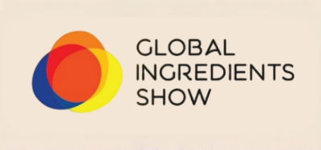

เปรียบเทียบ STPP และ SHMP ก่อนเลือกฟอสเฟต
เทียบหน้าที่ การละลาย วิธีทดสอบ และเกณฑ์ตรวจรับของ STPP และ SHMP ตามกระบวนการจริง
อ่านคู่มือผู้ซื้อข้อมูลสำหรับฝ่ายจัดซื้อ
ค้นหาคู่มือเลือกวัตถุดิบ ตรวจรับ และตรวจเอกสาร ข่าวงานแสดงสินค้าที่ผ่านมาอยู่ในหมวดแยก
ความลึกล่าสุด
คู่มือของเราช่วยให้คุณเปรียบเทียบเกรดสารเคมี กำหนดความต้องการผลิตภัณฑ์ และวางแผนจัดซื้อระหว่างประเทศ หากต้องการใบเสนอราคา โปรดส่งข้อกำหนดและระบุตลาดปลายทาง
เทียบหน้าที่ การละลาย วิธีทดสอบ และเกณฑ์ตรวจรับของ STPP และ SHMP ตามกระบวนการจริง
อ่านคู่มือผู้ซื้อ
เทียบแคลเซียมและฟอสฟอรัสบนฐานเดียวกัน ตรวจรูปไฮเดรต ขนาดอนุภาค สิ่งเจือปน และวิธีทดสอบ
อ่านคู่มือผู้ซื้อ
ตรวจข้อกำหนด SDS ผลวิเคราะห์ประจำล็อต ฉลาก ใบกำกับสินค้า และเอกสารขนส่งก่อนสั่งซื้อ
อ่านคู่มือผู้ซื้อ
เปรียบเทียบรูปทางเคมี ความบริสุทธิ์ สิ่งเจือปน วิธีทดสอบ และเอกสารตามการใช้งาน
อ่านคู่มือผู้ซื้อ
ตรวจคู่สัญญา สถานที่ผลิตหรือบรรจุ แหล่งกำเนิด ข้อกำหนด เอกสารประจำล็อต และการแจ้งเปลี่ยนแปลง
อ่านคู่มือผู้ซื้อ1 / 5
แฟ้มจัดเก็บส่วนการนําเสนอ
เรียกดู Bespring Columic's นิทรรศการนานาชาติ และเปิดแต่ละหน้าของเหตุการณ์สําหรับวันที่ สถานที่, บูทและ ผลงานโฟกัส

Bespring economy exculates expressions at Global Ingraditions Show 2025 ในมอสโกเมื่อ 15 เมษายน –17 ที่บูธ A512.
แสดงรายละเอียดของเหตุการณ์
Bespring economic เข้าร่วมใน Fi เวียดนาม 2024 ในเมืองโฮจิมินห์ ตั้งแต่ 9–11 ที่บูธ B40.
แสดงรายละเอียดของเหตุการณ์
Bespring Chemical เข้าร่วม Global Ingredients Show 2024 ที่มอสโก ระหว่างวันที่ 23–25 เมษายน ณ บูธ D115
แสดงรายละเอียดของเหตุการณ์
Bespring economic เข้าร่วมแข่งขันใน Fi ยุโรป 2023 ในแฟรงเฟิร์ตตั้งแต่วันที่ 28-30 พฤศจิกายนที่บูธ 3.1A33.
แสดงรายละเอียดของเหตุการณ์
Bespring eleagine เข้าร่วมแข่งขันใน Vet Food & Beeverange 2023 ในโฮจิมินห์ ซิตี้ ตั้งแต่วันที่ 10-12 ที่บูธ A3.127.
แสดงรายละเอียดของเหตุการณ์1 / 5